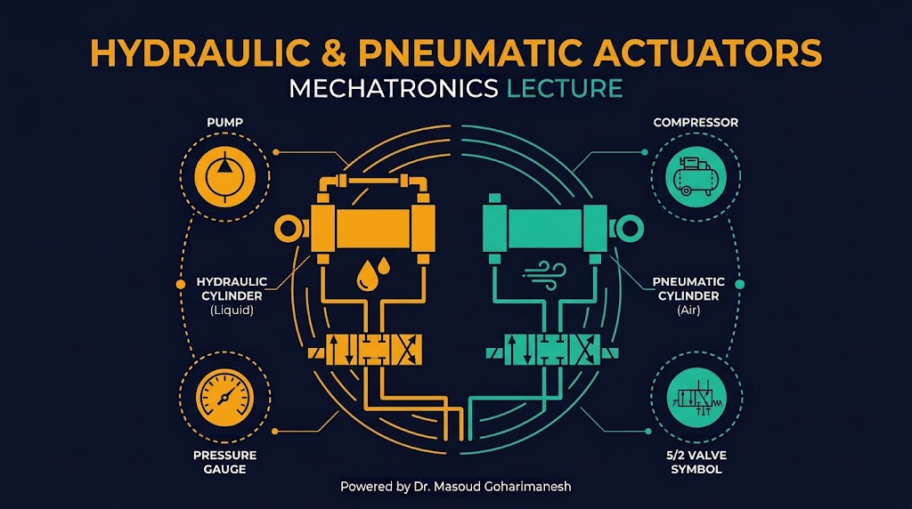
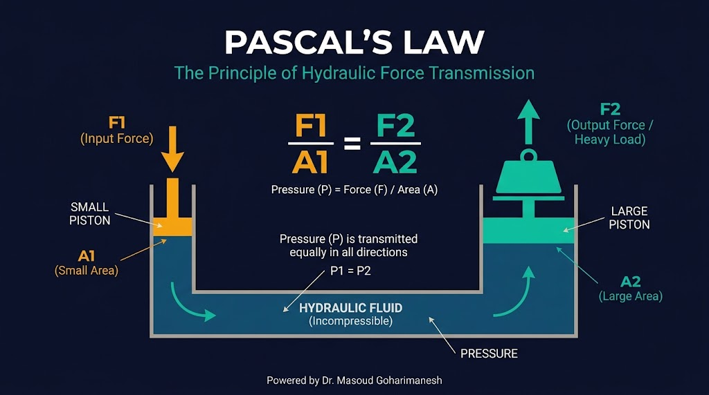
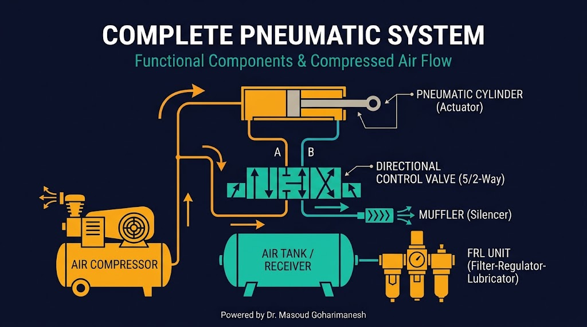
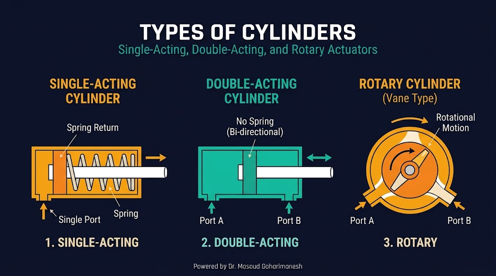
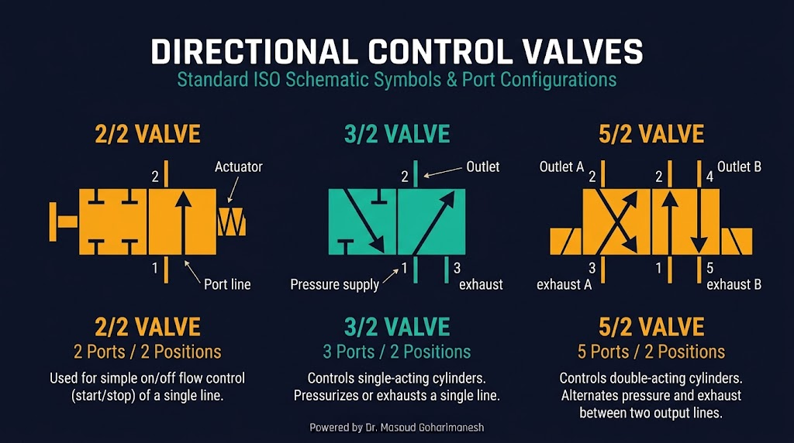
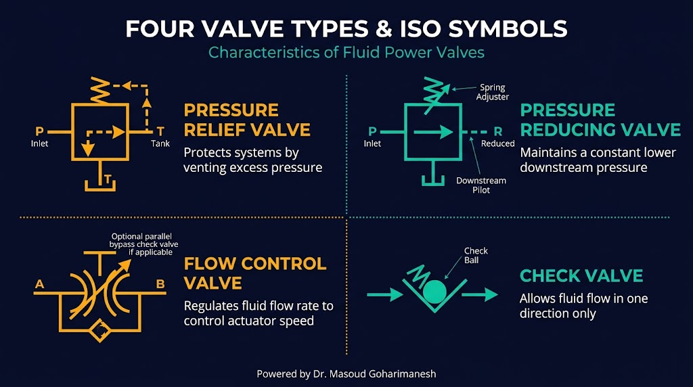

عملگرها (بخش دوم)
هیدرولیکی، پنوماتیکی و شیرهای کنترل
دکتر مسعود گوهریمنش
دانشیار گروه مهندسی مکانیک
دانشگاه تربت حیدریه | پاییز ۱۴۰۵
آیا میدانستید؟
قویترین رباتهای صنعتی از سیستمهای هیدرولیکی استفاده میکنند!
کاربردهای سیالاتی
- بیل مکانیکی: بازوهای هیدرولیکی
- خط تولید: گریپرهای پنوماتیکی
- ترمز خودرو: سیستم هیدرولیکی
- رباتهای امداد: قدرت بالا
- صنایع غذایی: پنوماتیک بهداشتی
سوال کلاسی
چرا در رباتهایی که نیاز به نیروی بسیار زیاد دارند (مثل بیل مکانیکی)، از سیستم هیدرولیکی استفاده میشود و نه الکتریکی؟
چرا عملگرهای سیالاتی؟
مزایا در مقایسه با عملگرهای الکتریکی
نیروی بسیار بالا
چگالی توان بالاتر از موتورهای الکتریکی — مناسب بارهای سنگین
نسبت توان به وزن
نسبت توان به وزن بسیار بالاتر — مناسب رباتهای متحرک سنگین
مقاومت در محیط سخت
کار در دماهای بالا، محیطهای مرطوب و خطرناک
چالشها
نیاز به پمپ/کمپرسور، نشتی سیال، هزینه نگهداری بالاتر، دقت پایینتر نسبت به سیستمهای الکتریکی.
اصول هیدرولیک — قانون پاسکال
پایه تمام سیستمهای هیدرولیکی

قانون پاسکال
فشار وارد بر یک سیال محبوس، بهطور یکسان در تمام جهات منتقل میشود. این یعنی با اعمال نیروی کوچک روی سطح کوچک، میتوان نیروی بسیار بزرگ روی سطح بزرگ ایجاد کرد.
مثال: اگر A₂ = ۱۰ × A₁ باشد، F₂ = ۱۰ × F₁
اجزای سیستم هیدرولیکی
از مخزن تا سیلندر

اجزای اصلی
- مخزن (Reservoir): ذخیره روغن هیدرولیک
- پمپ (Pump): تولید جریان و فشار — دندهای، پیستونی، پرهای
- شیر فشار (Relief Valve): محافظت از سیستم در برابر فشار اضافه
- شیر جهتدهنده: کنترل مسیر جریان
- سیلندر/موتور: تبدیل فشار به حرکت
- فیلتر: حذف آلودگیها از روغن
اصول پنوماتیک — هوای فشرده
سیال عامل: هوا (رایگان و پاک)
ویژگیهای پنوماتیک
- سیال عامل: هوای فشرده
- فشار کاری: ۶ تا ۱۰ بار
- سرعت بالا، نیروی متوسط
- تمیز و بدون نشتی خطرناک
- مناسب محیطهای بهداشتی
تراکمپذیری
هوا تراکمپذیر است، بنابراین کنترل موقعیت دقیق دشوارتر است. اما این ویژگی باعث جذب ضربه و نرمی حرکت میشود.
اجزای سیستم پنوماتیکی
از کمپرسور تا سیلندر

اجزای اصلی
- کمپرسور: تولید هوای فشرده
- مخزن (Receiver): ذخیره هوای فشرده، کاهش نوسان فشار
- واحد FRL: فیلتر + رگولاتور + روانکننده
- شیر برقی (Solenoid Valve): کنترل جریان هوا با سیگنال الکتریکی
- سیلندر پنوماتیکی: تولید حرکت خطی
- صداگیر (Muffler): کاهش صدای خروج هوا
سیلندرهای خطی و دوار
تبدیل فشار سیال به حرکت مکانیکی

یککاره
فقط یک پورت، بازگشت با فنر — ساده، ارزان
دوکاره
دو پورت، کنترل هر دو جهت — پرکاربرد
دوار
حرکت زاویهای محدود (۰-۲۷۰°) — برای چرخش
سیلندر بدون میله و تلسکوپی
طراحیهای خاص
سیلندر بدون میله (Rodless)
- طول کورس بلند در فضای کم
- اتصال بار با آهنربای قوی یا نوار مکانیکی
- کاربرد: جابجایی خطی افقی
- مناسب برای بازوهای کشویی ربات
سیلندر تلسکوپی
- چند مرحله تودرتو، کورس بسیار بلند
- کاربرد: بالابر، کامیون کمپرسی
- مناسب برای رباتهای امداد و نجات
شیرهای جهتدهنده
کنترل مسیر جریان سیال

2/2
۲ پورت، ۲ حالت — روشن/خاموش ساده
3/2
۳ پورت، ۲ حالت — کنترل سیلندر یککاره
5/2
۵ پورت، ۲ حالت — کنترل سیلندر دوکاره
نماد استاندارد ISO: هر مربع یک حالت، فلشها مسیر جریان، و حروف P (فشار)، T (مخزن)، A و B (خروجیها)
شیرهای فشار و جریان
کنترل و تنظیم پارامترهای سیستم

شیرهای فشار
- Relief Valve: محافظت از فشار اضافه
- Reducing Valve: کاهش فشار به مقدار دلخواه
- Sequence Valve: کنترل ترتیب عملکرد
شیرهای جریان
- Flow Control: تنظیم سرعت عملگر
- Check Valve: عبور یکطرفه سیال
- Needle Valve: تنظیم دقیق جریان
شیرهای متناسب و سروو
کنترل پیوسته و دقیق
شیر متناسب (Proportional)
- موقعیت اسپول متناسب با سیگنال ورودی
- کنترل پیوسته دبی و فشار
- پاسخ متوسط، قیمت متوسط
- کاربرد: رباتهای هیدرولیکی صنعتی
شیر سروو (Servo)
- کنترل بسیار دقیق موقعیت
- پاسخ بسیار سریع
- بازخورد داخلی
- کاربرد: رباتهای جراحی، شبیهساز پرواز
نکته رباتیک: در سیستمهای رباتیک پیشرفته، شیرهای سروو با کنترل PID، امکان دستیابی به دقت میکرومتری را فراهم میکنند.
مقایسه انواع عملگرها
انتخاب هوشمندانه برای هر کاربرد
| معیار | الکتریکی | هیدرولیکی | پنوماتیکی |
|---|---|---|---|
| نیرو | کم-متوسط | بسیار بالا | متوسط |
| سرعت | متوسط | متوسط | بالا |
| دقت | بسیار بالا | متوسط | پایین |
| تمیزی | تمیز | نشتی روغن | تمیز |
| هزینه نگهداری | کم | بالا | متوسط |
| کاربرد رباتیک | ربات دقیق | ربات سنگین | گریپر، خط تولید |
انتخاب نهایی: برای رباتهای دقیق و سبک → الکتریکی | برای بارهای سنگین → هیدرولیکی | برای سرعت و تمیزی → پنوماتیکی
شبیهساز تعاملی
کنترل سیلندر پنوماتیکی با شیر ۵/۲
شبیهساز سیلندر پنوماتیکی دوکاره
فشار هوا و وضعیت شیر را تغییر دهید تا حرکت سیلندر را ببینید.
تمرینهای کلاسی
جلسه هفتم - عملگرها (بخش دوم)
الف) سوالات مفهومی
ب) تمرینهای عملی
ج) تمرین نوشتاری
د) چالش خلاقانه ★
جمعبندی
نکات کلیدی جلسه هفتم
- مزایا و چالشهای عملگرهای سیالاتی
- قانون پاسکال و اصول هیدرولیک
- اجزای سیستم هیدرولیکی و پنوماتیکی
- انواع سیلندرها: یککاره، دوکاره، دوار، بدون میله، تلسکوپی
- شیرهای جهتدهنده (2/2، 3/2، 5/2) و نمادهای ISO
- شیرهای فشار، جریان، متناسب و سروو
- مقایسه کامل الکتریکی، هیدرولیکی و پنوماتیکی
جلسه بعد: سیستمهای کنترل (بخش اول) — بازخورد، مدلسازی، لاپلاس
Powered by Dr. Masoud Goharimanesh